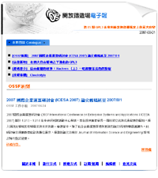

全新電子報正式上線 歡迎大家踴躍來訂閱
建立日期 2007-08-20 19:48 最近更新在 2011-01-06 23:55
作者是 電子報編輯小組
為提供您更彈性的的閱讀選擇，編輯小組正式推出網頁版本(HTML)電子報，與原本的純文字版(TXT)並行發刊。煥然ㄧ新的網頁版本(HTML)將每期的發行主題、文章內容、專欄名稱、圖片及連結頁面等做更有效率的編排，您可以依照您的閱讀習慣，在本網頁左頁面訂閱 HTML 或是 TXT 電子報。
歡迎舊雨新知繼續支持我們電子報，有什麼意見、建議、抱怨或讚美，請別吝嗇寫信給我
這個 E-mail 地址已經被防止灌水惡意程式保護，您需要啟用 Java Script 才能觀看
，謝謝大家！
您也許有興趣閱讀以下文章: